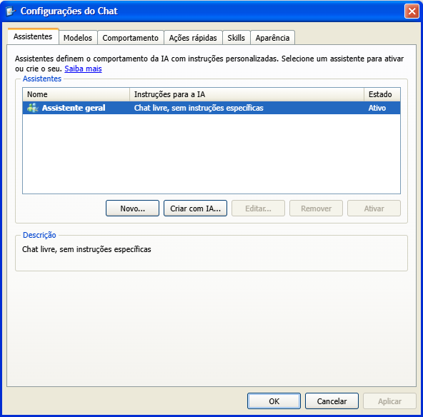
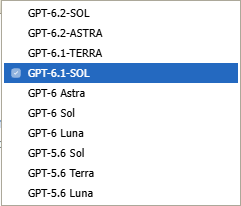

Nardoto
NardotoNardoto IDE 3.3: o chat do MSN e as conversas em mosaico
A versão 3.3 do Nardoto IDE traz o visual do MSN ao chat, janelas de configuração do Windows XP e uma faixa para recuperar conversas minimizadas no mosaico.

Quem já usou o MSN Messenger reconhece a janela antes de ler o título. A foto da pessoa fica ao lado da caixa de escrever, a do interlocutor acompanha a conversa e cada fala começa com um nome. No Nardoto IDE, o interlocutor pode ser o Codex em uma aba e o Mark-I em outra. O tema Windows XP da versão 3.3 leva esse desenho do Studio para o editor e usa o espaço reservado ao contato para mostrar qual IA está respondendo.
O tema clássico já existia no IDE. A diferença desta versão fica clara ao abrir a engrenagem do chat. Antes, ela levava ao painel geral, onde os ajustes da conversa dividiam espaço com idioma, terminal e workspace. Agora ela abre uma janela própria no tema XP. Dá para mudar o assistente e voltar à conversa com o editor no mesmo lugar.
O que se abre pela engrenagem
As abas Assistentes, Modelos, Comportamento, Ações rápidas, Skills e Aparência dão acesso às preferências do chat. Na primeira, a lista mostra o nome de cada assistente, as instruções que ele recebe e qual está ativo. Um clique seleciona a linha para ler a descrição ou editar. O botão Ativar e o duplo clique aplicam o assistente à conversa. Isso permite comparar instruções sem trocar de assistente a cada linha que se lê.

O painel geral continua disponível pela engrenagem do IDE ou pela tecla F10. Ali ficam, por exemplo, o idioma do aplicativo e as conexões com os provedores. No tema XP, os assuntos aparecem na faixa lateral azul. A página de conexões mostra o estado das ferramentas e as ações disponíveis para cada IA. A separação entre as duas janelas também vale para os atalhos: abrir os modelos pelo chat não exige passar pelas configurações do aplicativo inteiro.
Por que o seletor de modelos parecia uma pilha de botões
O tema desenha botões com borda e relevo, como fazia o Windows XP. Cada nome do seletor era um botão. Quando a lista abria sobre a conversa, cada opção herdava esse acabamento. As descrições quebravam em várias linhas e um menu com poucos modelos já escondia uma boa parte do texto que a pessoa estava lendo.
A correção foi marcar esse conjunto como uma lista de escolha. O tema passa a desenhar um painel branco, com os nomes alinhados à esquerda e uma linha azul sob o cursor ou o foco do teclado. O modelo em uso leva um visto. A descrição continua disponível ao parar o mouse sobre o nome.

Para trocar de modelo sem tirar as mãos do teclado, abra a lista, percorra os nomes com as setas e confirme com Enter. Esc fecha a lista e devolve o foco ao botão. As opções vêm do catálogo do provedor, então os nomes que aparecem na sua instalação podem ser diferentes dos que aparecem na captura.
Quando há várias conversas abertas
No mosaico, Nova conversa abre outra aba sem precisar reunir as que já estão na tela. Cada conversa tem os próprios botões de minimizar e fechar. A diferença entre as duas ações importa principalmente quando a IA ainda está trabalhando.
- Minimizar libera espaço e mantém a conversa aberta, com o rascunho e a resposta em andamento.
- Restaurar dispensa procurar no histórico. Passe o mouse sobre a faixa no topo e clique no nome da aba que quer trazer de volta.
- Fechar tira a aba do mosaico. A conversa salva continua disponível no histórico.
Para quem prefere manter o chat à vista durante uma resposta longa, o chat principal também ganhou o atalho Jogar enquanto espera. Ele abre o Blocos 3D na área da conversa. Quando a resposta chega, o IDE avisa e oferece a escolha entre ler a mensagem e continuar a partida.
O instalador do Nardoto IDE para Windows está disponível na página da versão 3.3.0. Para ver as duas janelas descritas aqui, selecione Windows XP em Configurações, Aparência, e abra a engrenagem de uma conversa.
Escrito por Tharcisio Nardoto, engenheiro civil e criador do Nardoto Studio.